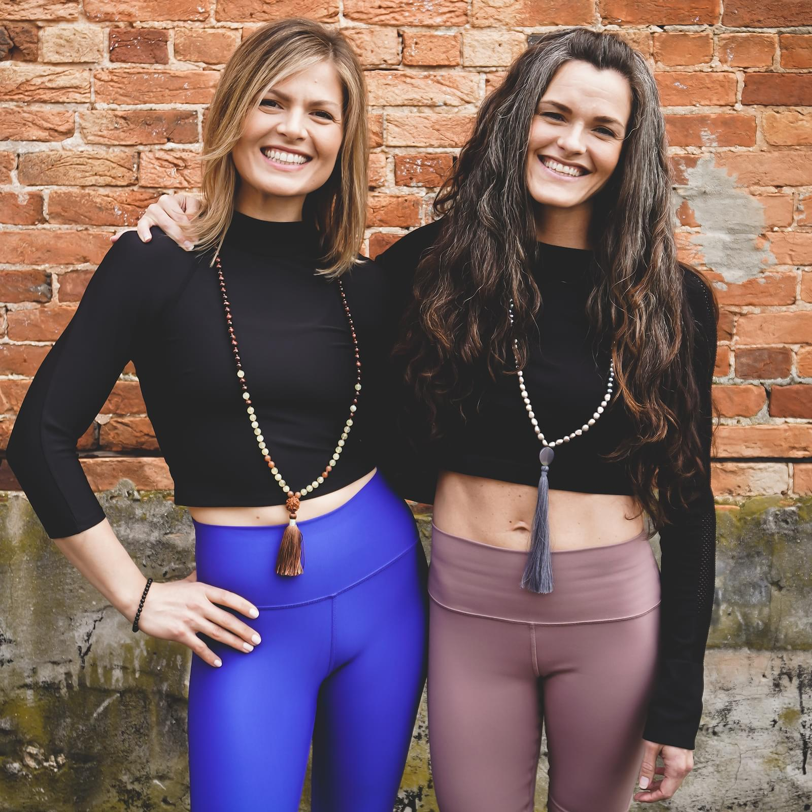

    <section class="ftco-section">
        <div class="container-fluid">
            <div class="row justify-content-center mb-5">
                <div class="col-md-12 heading-section text-center ftco-animate">
                    <h3 class="subheading">Story</h3>
                    <h2 class="mb-1">Our Story</h2>
                </div>
            </div>
            <div class="col-9 container">
                <div class="justify-content-center">

                    

                </div>
            </div>
            <section class="ftco-section d-md-flex bg-light">
                <div class="container ftco-animate">
                    <p class="ftco-animate">
                        We (<A href="dana">Dana Fields,</A> & <A href="travis">Travis Lancaster</A>) met in 2009 at Stephen Decatur High School where we worked together as Visual Arts Teachers. Sharing side by side classrooms, we quickly developed a great working relationship and close friendship. Our friendship allowed us to run ideas past one another, to offer each other advice, and to give each other on going support.
                    </p><BR />
                    <p class="ftco-animate">
                        Fast forward a handful of years, Travis resigned from teaching art to care full-time for her newborn son. Shortly after, Dana took a departure from teaching art to take an opportunity with Rise Up Coffee, a local organic and Fair Trade coffee company. Side-note: We both shared a long love for yoga which was quickly building momentum.
                    </p><BR />
                    <p class="ftco-animate">
                        In 2016 Dana followed her dreams and became a certified yoga teacher. Inspired and encouraged by Dana, Travis did the same in 2017. After finishing our training programs, we began teaching yoga and both knew we were on the right path! Our passion was growing exponentially.
                    </p><BR />
                    <p class="ftco-animate">
                        Eager to learn more, in 2018, we traveled to Brooklyn, NY to complete an advanced yoga training at Lighthouse Yoga School with international yoga instructor Jared McCann. The training was a magical experience and continued to deepen our personal and teaching practices.
                    </p><BR />
                    <p class="ftco-animate">
                        Fast forward to the PRESENT, together, we have decided it is time to create our own yoga home on the Eastern Shore. We are ready to share our vision, passion and love of yoga with our community! We believe that a regular yoga practice can give you the tools to transform your physical and mental bodies for the better, allowing you to live in the present moment creating a joyful life. We have created a beautiful space, full of loving kindness, where you will receive the scaffolding to challenge yourself, to break free of your boundaries and to transform!
                    </p>
                </div>
            </section>
        </div>
    </section>

